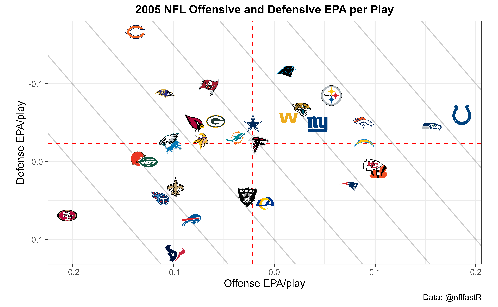

All examples listed below assume that the following two libraries are installed and loaded.
If you have trouble understanding the code in the examples we highly recommend the nflfastR beginner’s guide in vignette("beginners_guide").
The functionality of nflscrapR can be duplicated by using fast_scraper(). This obtains the same information contained in nflscrapR (plus some extra) but much more quickly. To compare to nflscrapR, we use their data repository as the program no longer functions now that the NFL has taken down the old Gamecenter feed. Note that EP differs from nflscrapR as we use a newer era-adjusted model (more on this in vignette("nflfastR-models")).
This example also uses the built-in function clean_pbp() to create a ‘name’ column for the primary player involved (the QB on pass play or ball-carrier on run play).
read_csv(url('https://github.com/ryurko/nflscrapR-data/blob/master/play_by_play_data/regular_season/reg_pbp_2019.csv?raw=true')) %>% filter(home_team == 'SF' & away_team == 'SEA') %>% select(desc, play_type, ep, epa, home_wp) %>% head(5) %>% knitr::kable(digits = 3)
| desc | play_type | ep | epa | home_wp |
|---|---|---|---|---|
| J.Myers kicks 65 yards from SEA 35 to end zone, Touchback. | kickoff | 0.815 | 0.000 | NA |
| (15:00) T.Coleman left guard to SF 26 for 1 yard (J.Clowney). | run | 0.815 | -0.606 | 0.500 |
| (14:19) T.Coleman right tackle to SF 25 for -1 yards (P.Ford). | run | 0.209 | -1.146 | 0.485 |
| (13:45) (Shotgun) J.Garoppolo pass short middle to K.Bourne to SF 41 for 16 yards (J.Taylor). Caught at SF39. 2-yac | pass | -0.937 | 3.223 | 0.453 |
| (12:58) PENALTY on SEA-J.Reed, Encroachment, 5 yards, enforced at SF 41 - No Play. | no_play | 2.286 | 0.774 | 0.551 |
fast_scraper('2019_10_SEA_SF') %>% clean_pbp() %>% select(desc, play_type, ep, epa, home_wp, name) %>% head(6) %>% knitr::kable(digits = 3)
| desc | play_type | ep | epa | home_wp | name |
|---|---|---|---|---|---|
| GAME | NA | NA | NA | NA | NA |
| 5-J.Myers kicks 65 yards from SEA 35 to end zone, Touchback. | kickoff | 1.500 | 0.000 | 0.560 | NA |
| (15:00) 26-T.Coleman left guard to SF 26 for 1 yard (90-J.Clowney). | run | 1.500 | -0.528 | 0.560 | T.Coleman |
| (14:19) 26-T.Coleman right tackle to SF 25 for -1 yards (97-P.Ford). | run | 0.972 | -0.746 | 0.546 | T.Coleman |
| (13:45) (Shotgun) 10-J.Garoppolo pass short middle to 84-K.Bourne to SF 41 for 16 yards (24-J.Taylor). Caught at SF39. 2-yac | pass | 0.225 | 2.240 | 0.524 | J.Garoppolo |
| (12:58) PENALTY on SEA-91-J.Reed, Encroachment, 5 yards, enforced at SF 41 - No Play. | no_play | 2.465 | 0.801 | 0.590 | NA |
This is a demonstration of nflfastR’s capabilities. While nflfastR can scrape a batch of games very quickly, please be respectful of Github’s servers and use the data repository which hosts all the scraped and cleaned data whenever possible. The only reason to ever actually use the scraper is if it’s in the middle of the season and we haven’t updated the repository with recent games (but we will try to keep it updated).
#get list of some games from 2019 games_2019 <- fast_scraper_schedules(2019) %>% head(10) %>% pull(game_id) tictoc::tic(glue::glue('{length(games_2019)} games with nflfastR:')) f <- fast_scraper(games_2019, pp = TRUE) tictoc::toc() #> 10 games with nflfastR:: 15.84 sec elapsed
Let’s look at CPOE leaders from the 2009 regular season.
As discussed above, nflfastR has a data repository for old seasons, so there’s no need to actually scrape them. Let’s use that here (the below reads .rds files, but .csv and .parquet are also available).
tictoc::tic('loading all games from 2009') games_2009 <- readRDS(url('https://raw.githubusercontent.com/guga31bb/nflfastR-data/master/data/play_by_play_2009.rds')) %>% filter(season_type == 'REG') tictoc::toc() #> loading all games from 2009: 2.18 sec elapsed games_2009 %>% filter(!is.na(cpoe)) %>% group_by(passer_player_name) %>% summarize(cpoe = mean(cpoe), Atts=n()) %>% filter(Atts > 200) %>% arrange(-cpoe) %>% head(5) %>% knitr::kable(digits = 1)
| passer_player_name | cpoe | Atts |
|---|---|---|
| D.Brees | 7.4 | 509 |
| P.Manning | 6.6 | 569 |
| P.Rivers | 6.4 | 474 |
| B.Favre | 6.2 | 527 |
| B.Roethlisberger | 5.3 | 503 |
When working with nflfastR, drive results are automatically included. Let’s look at how much more likely teams were to score starting from 1st & 10 at their own 20 yard line in 2015 (the last year before touchbacks on kickoffs changed to the 25) than in 2000.
games_2000 <- readRDS(url('https://raw.githubusercontent.com/guga31bb/nflfastR-data/master/data/play_by_play_2000.rds')) games_2015 <- readRDS(url('https://raw.githubusercontent.com/guga31bb/nflfastR-data/master/data/play_by_play_2015.rds')) pbp <- bind_rows(games_2000, games_2015) pbp %>% filter(season_type == 'REG' & down == 1 & ydstogo == 10 & yardline_100 == 80) %>% mutate(drive_score = if_else(drive_end_transition %in% c("Touchdown", "Field Goal", "TOUCHDOWN", "FIELD_GOAL"), 1, 0)) %>% group_by(season) %>% summarize(drive_score = mean(drive_score)) %>% knitr::kable(digits = 3)
| season | drive_score |
|---|---|
| 2000 | 0.234 |
| 2015 | 0.305 |
So about 23% of 1st & 10 plays from teams’ own 20 would see the drive end up in a score in 2000, compared to 30% in 2015. This has implications for Expected Points models (see vignette("nflfastR-models")).
Let’s build the NFL team tiers using offensive and defensive expected points added per play for the 2005 regular season. The logo urls of the espn logos are integrated into the ?teams_colors_logos data frame which is delivered with the package.
Let’s also use the included helper function clean_pbp(), which creates “rush” and “pass” columns that (a) properly count sacks and scrambles as pass plays and (b) properly include plays with penalties. Using this, we can keep only rush or pass plays.
library(ggimage) pbp <- readRDS(url('https://raw.githubusercontent.com/guga31bb/nflfastR-data/master/data/play_by_play_2005.rds')) %>% filter(season_type == 'REG') %>% filter(!is.na(posteam) & (rush == 1 | pass == 1)) offense <- pbp %>% group_by(posteam) %>% summarise(off_epa = mean(epa, na.rm = TRUE)) defense <- pbp %>% group_by(defteam) %>% summarise(def_epa = mean(epa, na.rm = TRUE)) logos <- teams_colors_logos %>% select(team_abbr, team_logo_espn) offense %>% inner_join(defense, by = c("posteam" = "defteam")) %>% inner_join(logos, by = c("posteam" = "team_abbr")) %>% ggplot(aes(x = off_epa, y = def_epa)) + geom_abline(slope = -1.5, intercept = c(.4, .3, .2, .1, 0, -.1, -.2, -.3), alpha = .2) + geom_hline(aes(yintercept = mean(off_epa)), color = "red", linetype = "dashed") + geom_vline(aes(xintercept = mean(def_epa)), color = "red", linetype = "dashed") + geom_image(aes(image = team_logo_espn), size = 0.05, asp = 16 / 9) + labs( x = "Offense EPA/play", y = "Defense EPA/play", caption = "Data: @nflfastR", title = "2005 NFL Offensive and Defensive EPA per Play" ) + theme_bw() + theme( aspect.ratio = 9 / 16, plot.title = element_text(size = 12, hjust = 0.5, face = "bold") ) + scale_y_reverse()

We have provided a calculator for working with the Expected Points model. Here is an example of how to use it, looking for how the Expected Points on a drive beginning following a touchback has changed over time.
While I have put in 'SEA' for home_team and posteam, this only matters for figuring out whether the team with the ball is the home team (there’s no actual effect for given team; it would be the same no matter what team is supplied).
data <- tibble::tibble( "season" = 1999:2019, "week" = 5, 'home_team' = 'SEA', 'posteam' = 'SEA', 'roof' = 'outdoors', 'half_seconds_remaining' = 1800, 'yardline_100' = c(rep(80, 17), rep(75, 4)), 'down' = 1, 'ydstogo' = 10, 'posteam_timeouts_remaining' = 3, 'defteam_timeouts_remaining' = 3 ) nflfastR::calculate_expected_points(data) %>% select(season, yardline_100, td_prob, ep) %>% knitr::kable(digits = 2)
| season | yardline_100 | td_prob | ep |
|---|---|---|---|
| 1999 | 80 | 0.33 | 0.59 |
| 2000 | 80 | 0.33 | 0.59 |
| 2001 | 80 | 0.33 | 0.59 |
| 2002 | 80 | 0.34 | 0.78 |
| 2003 | 80 | 0.34 | 0.78 |
| 2004 | 80 | 0.34 | 0.78 |
| 2005 | 80 | 0.34 | 0.78 |
| 2006 | 80 | 0.34 | 0.79 |
| 2007 | 80 | 0.34 | 0.79 |
| 2008 | 80 | 0.34 | 0.79 |
| 2009 | 80 | 0.34 | 0.79 |
| 2010 | 80 | 0.34 | 0.79 |
| 2011 | 80 | 0.34 | 0.79 |
| 2012 | 80 | 0.34 | 0.79 |
| 2013 | 80 | 0.34 | 0.79 |
| 2014 | 80 | 0.35 | 0.94 |
| 2015 | 80 | 0.35 | 0.94 |
| 2016 | 75 | 0.38 | 1.37 |
| 2017 | 75 | 0.38 | 1.37 |
| 2018 | 75 | 0.40 | 1.44 |
| 2019 | 75 | 0.40 | 1.44 |
Not surprisingly, offenses have become much more successful over time, with the kickoff touchback moving from the 20 to the 25 in 2016 providing an additional boost. Note that the td_prob in this example is the probability that the next score within the same half will be a touchdown scored by team with the ball, not the probability that the current drive will end in a touchdown (this is why the numbers are different from Example 4 above).
We could compare the most recent four years to the expectation for playing in a dome by inputting all the same things and changing the roof input:
data <- tibble::tibble( "season" = 2016:2019, "week" = 5, 'home_team' = 'SEA', 'posteam' = 'SEA', 'roof' = 'dome', 'half_seconds_remaining' = 1800, 'yardline_100' = c(rep(75, 4)), 'down' = 1, 'ydstogo' = 10, 'posteam_timeouts_remaining' = 3, 'defteam_timeouts_remaining' = 3 ) nflfastR::calculate_expected_points(data) %>% select(season, yardline_100, td_prob, ep) %>% knitr::kable(digits = 2)
| season | yardline_100 | td_prob | ep |
|---|---|---|---|
| 2016 | 75 | 0.40 | 1.56 |
| 2017 | 75 | 0.40 | 1.56 |
| 2018 | 75 | 0.42 | 1.67 |
| 2019 | 75 | 0.42 | 1.67 |
| So for 20 | 18 and 2019, 1s | t & 10 fro | m a home team’s own 25 yard line had EP of 1.44 outdoors and 1.67 in domes |
This section used to contain an example of working with roster data. Unfortunately, we have not found a way to obtain roster data that can be joined to the new play by play, so for now, it is empty. We would like to be able to get position data but haven’t yet.
The clean_pbp() function does a lot of work cleaning up player names and IDs for the purpose of joining them to roster data, but we do not have any roster data to join to. Note that player IDs are inconsistent between the old (1999-2010) and new (2011 - present) data sources so use IDs with caution. Unfortunately there is nothing we can do about this as the NFL changed their system for IDs in the underlying data.